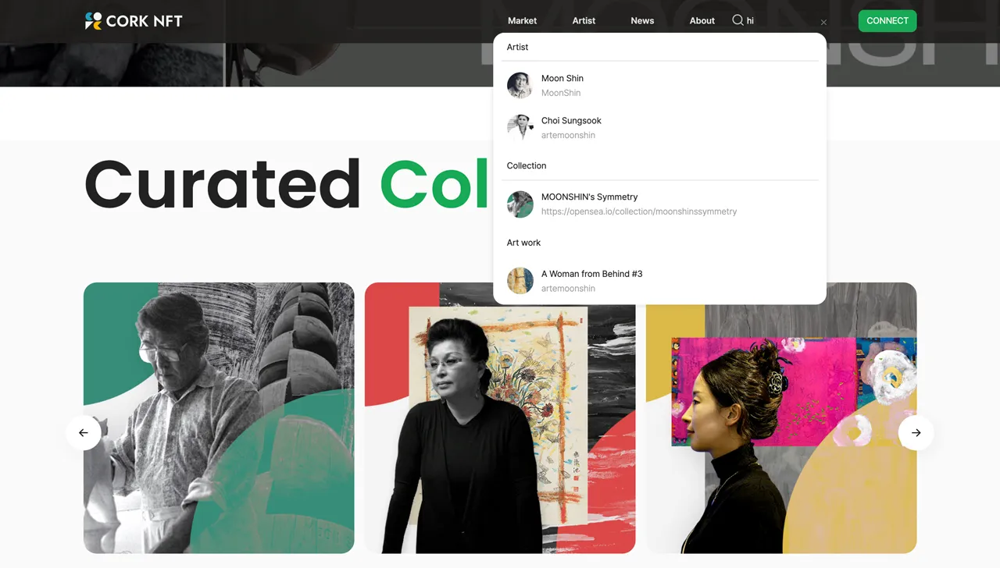
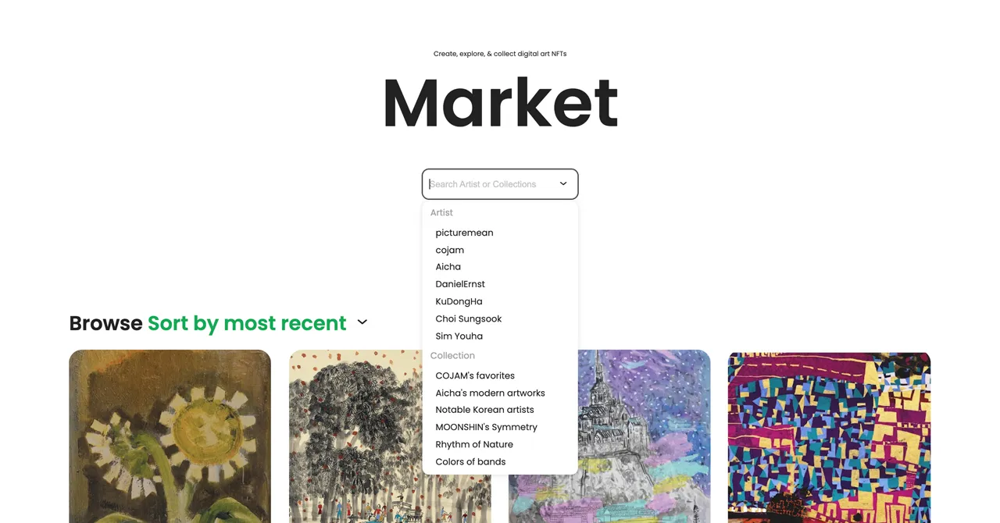
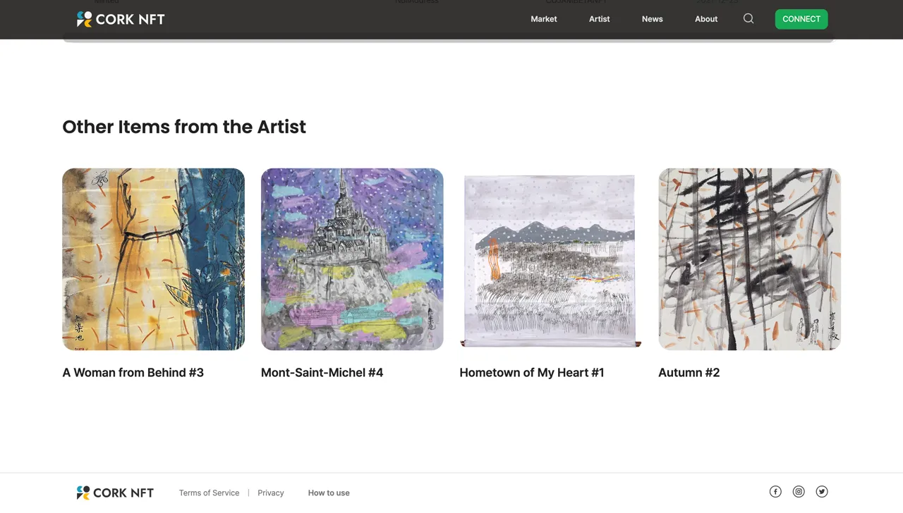
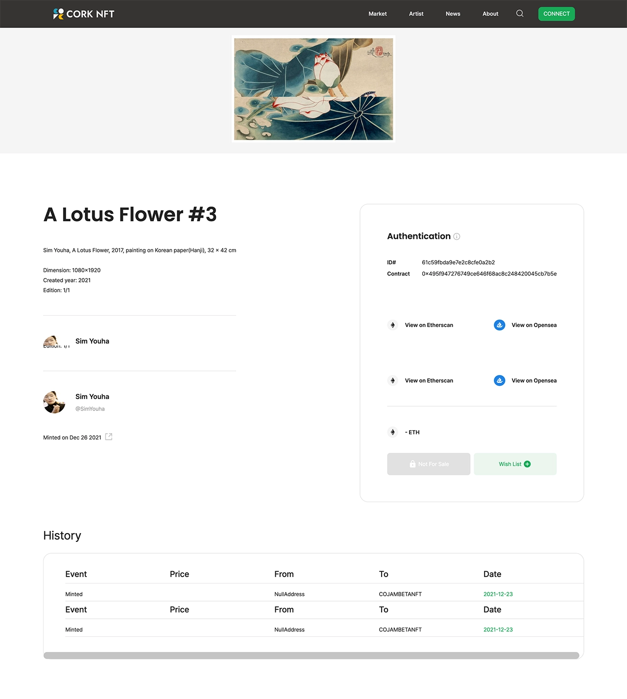
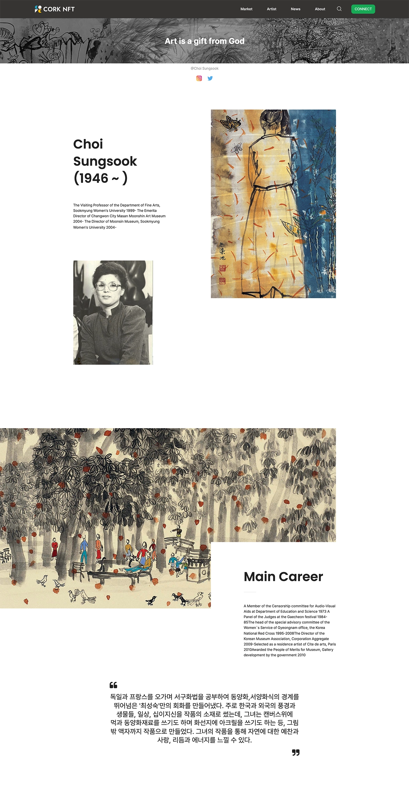

Cork NFT
Account flows, search, and reusable gallery components
Phase 1 · 4 weeks · 4 developers · React / Firebase / Recoil
Overview and role
I joined Phase 1 of an NFT gallery project in a four-developer team, including senior frontend and backend developers. Over four weeks, we planned and built the desktop website and deployed it for a client showcase.
My work covered Firebase account flows, navigation and footer components, search, artist and artwork detail pages, and reusable gallery components.
Account flows and data requests
I implemented the UI and functionality for sign-up, login, account deletion, profile editing, and profile photo updates with Firebase, alongside a custom useAxios hook.
Navigation and marketplace search
I built the navigation and marketplace search interfaces and connected them to query-based search. Shared navigation and footer components kept the page structure consistent.


Gallery components and detail pages
I built reusable artwork grids and sliders for the artist and artwork pages, and added hover interactions with CSS transitions.




Tools and technologies
React Hooks · Firebase · Recoil · JavaScript · Sass · HTML5
Trello · GitHub · Postman · Figma